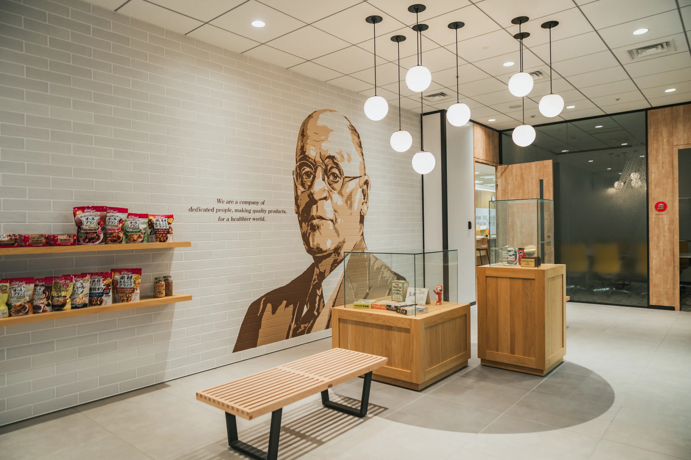

信頼される食品ブランドを通じて
みんなにとってより良い日々と
"場"を作り続ける
みんなにとってより良い日々と
"場"を作り続ける
MESSAGE —
採用メッセージ
それは、創始者である W.K.ケロッグの⼈々への願い。
100年以上続く歴史の中で、私たちが、 ずっと守り続けてきた変わらぬ想いでもあります。
昨今の刻⼀刻と変化する社会の中にあってこの変わらぬ想いを胸に、 私たちとともに働きませんか。
⾷の総合メーカーとしてイノベーションを起こせる⼟壌が、 ここにはあります。
ぜひ、私たちとともに、 ⼈々の健康と笑顔を叶えましょう。
世界にも期待される、
日本発のイノベーション
海外資本の会社である日本ケロッグですが、マーケティングや商品開発に大きな裁量があり、主力なシリアル製品は国内で製造しています。それは日本のニーズを的確に捉え、そして高い品質が要求される日本の消費者と真摯に向き合うためです。
国内で展開する製品の商品開発、マーケティングは日本のチームで主導。「コーンフロスティ」「玄米フレーク」などのシリアル製品は、製造まで日本国内の高崎工場で行っています。海外資本でありながら商品展開における自由裁量が高い点は私たちの特長であり、部門を問わず、自社の製品を扱うという誇りを実感することができます。
時代とともに変化するお客様のニーズ。そこに耳を傾け、おいしく栄養価の高い製品を提供しようと、日々、私たちは研究開発を行い、数々の商品を日本市場に送り出してきました。
2013年には、グローバル本社を説得して「グラノラ」を発売。現在では日本ケロッグを代表する製品の⼀つとなりました。2020年には、腸活をサポートし続ける「オールブラン」をリニューアル。機能性表示食品として新たなスタートをきりました。今後も、日本からイノベーションを生み出していきます。
日本国内の高崎工場で50年以上にわたって培われたシリアルの製造技術は、日本ケロッグの製品価値の維持に貢献しています。
特に製造工程における⼈の安全・食の安全を守る取り組みは、何よりも大切なものとして、社内に周知されています。社会情勢の変化が激しい昨今においても、⼈の安全・食の安全を第⼀に、高崎工場での生産基盤を継承し守り続けていきます。
日本のシリアル市場は浸透率が40%にも満たず、今後も拡大の余地があります。シリアル製品のパイオニアである日本ケロッグの営業チームは、カテゴリーリーダーとして市場を牽引することを期待されています。
またケロッグ、プリングルズは世界的な知名度があり、マーケティング・宣伝活動においても注目度があります。これらのブランドエクイティを活用できることも、日本ケロッグで働くことの魅力です。